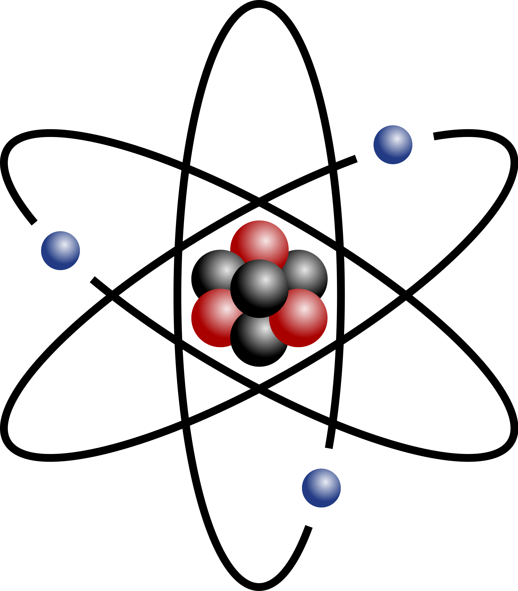
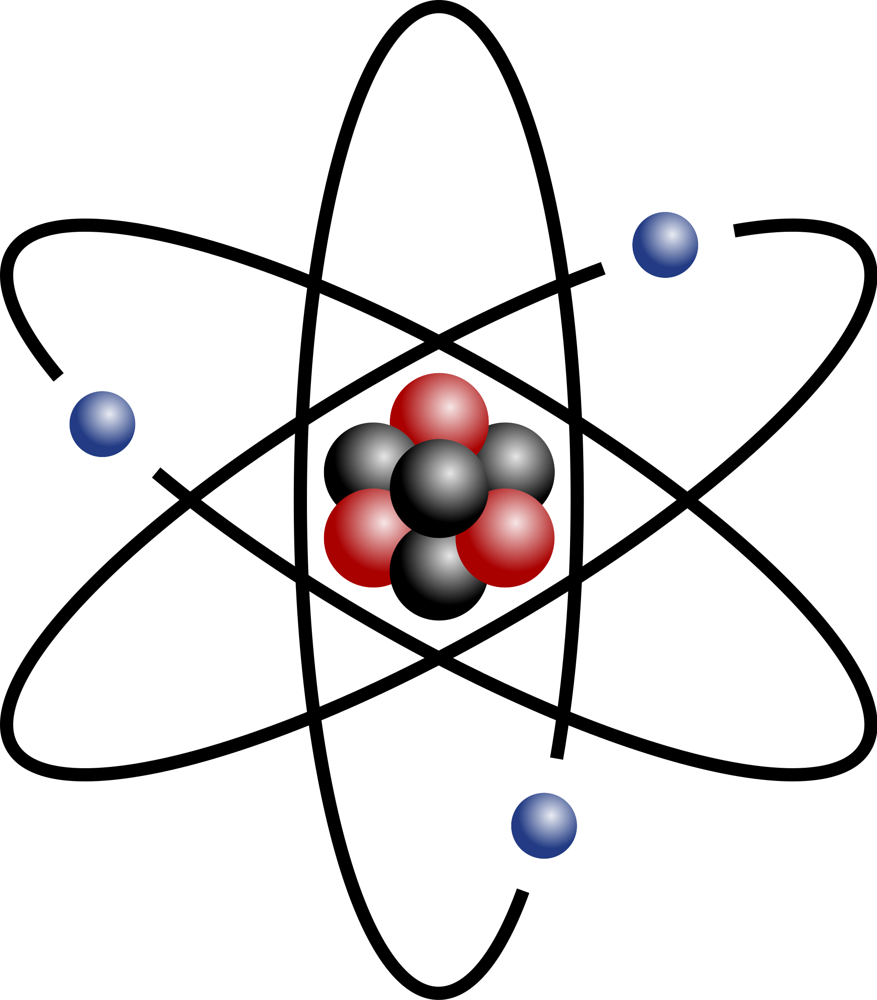

Aouz
O problema da fé cega
A AOUZ foi criada com o intuito de espalhar o conhecimento de forma homogênea e imparcial. Criei este espaço para compartilhar conhecimento e sabedoria de forma livre, sem preconceitos ou censura, mas, é claro, sempre priorizando o respeito.
Tudo o que conhecemos no universo parece obedecer a leis cíclicas e fechadas, nas quais nada é verdadeiramente criado ou destruído — apenas transformado.
Essa dinâmica não se limita à matéria ou à energia, mas também se aplica às ideias, crenças e estruturas sociais.
Pode parecer, à primeira vista, que a matéria segue um ciclo finito e que tudo o que é físico está condenado ao desaparecimento.
No entanto, essa conclusão nasce de uma interpretação limitada, baseada apenas na percepção sensorial e não na essência dos fenômenos.
O ciclo, ao contrário do que muitos pensam, não representa repetição vazia, mas uma continuidade viva. A transformação constante é o alicerce da permanência — não o oposto dela.


 

Se nada realmente termina, e tudo apenas se reconfigura, então talvez o que mais nos assuste não seja a morte, mas a impossibilidade de permanecer imutável.